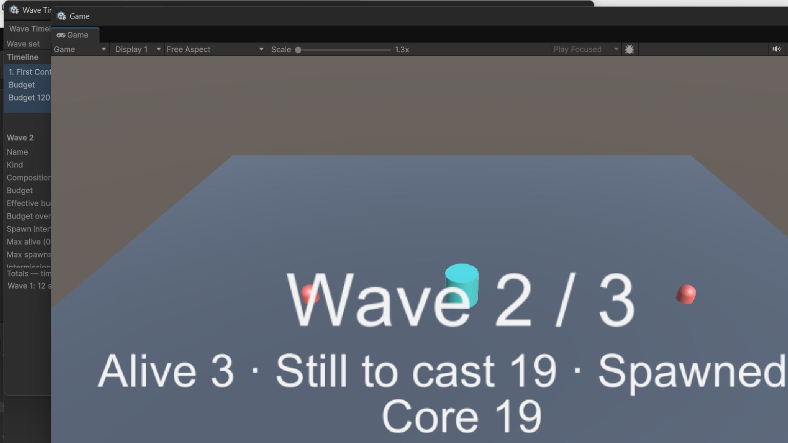

Pacing, Intermissions, and Boss Waves
Expanded from the shipped Documentation~/ApiReference.md.
Pacing inside a wave
The engine drains the composed queue at the wave's spawn interval (after difficulty compression — page 05), one spawn per interval, and respects:
- Alive cap (
MaxAliveon the definition): spawning pauses while the cap is reached and resumes the moment something clears. An enemy counts as cleared when its instance is destroyed or deactivated — the pattern both plain games (kill deactivates or destroys) and pooling games (despawn deactivates) already use, so no death callback is needed. - Spawn-point rules: each point has a weight (0 or below disables it), a cooldown it rests for after each spawn, and its own alive cap. The engine chooses among eligible points with a seeded weighted choice, so identical runs pick identical points.
- A wave completes only when its queue is empty AND nothing it spawned is alive. An empty queue with one survivor standing is not a cleared wave.
If a spawner refuses a spawn (for example, a pool at its cap), the engine waits an interval and retries; the spawn is never dropped.

Transport
The director's controls: Start, Pause (freezes spawn timing mid-wave), Resume, Stop (despawns the whole field and returns to Idle), and SkipToWave (despawns the current field and starts the target wave with its own stream — skipping does not fire the skipped wave's completion).
Intermissions
Between waves the engine rests for the intermission: the set's DefaultIntermission, or the finishing wave's IntermissionAfter override when one is set. Intermission is a real engine state with its own event (IntermissionStarted), so your game can run shop phases, build phases, or breathers off the same hook.
After the last wave
AfterLastWave on the wave set chooses:
- Stop — the run completes (
AllWavesCompleted). - Loop — the definitions repeat; difficulty follows the absolute wave index, so wave 9 uses wave 9's scaled budget against the repeated definitions.
- Endless — the final definition repeats, scaled by the absolute index, for as long as the run lasts.
Boss waves
A boss wave works differently by design:
- The boss is placed first in the queue — always.
- The remaining budget fills with escorts, composed like a budget wave.
- If the boss costs more than the wave's budget, the boss still spawns: it goes out alone, escort fill is skipped, the result is flagged (
BossClamped), the reported total cost is the true over-budget figure, and the clamp is surfaced through the engine's warning event. The editor validator warns about the same condition at authoring time, before you ever press Play.
A boss is never silently dropped, and a budget overrun is never silently hidden.